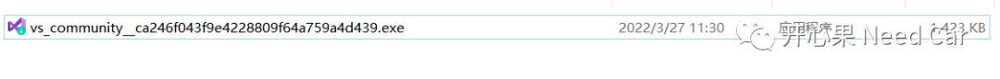
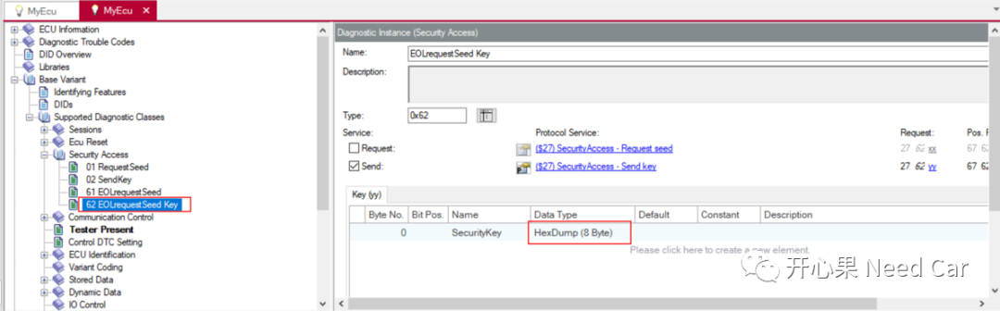
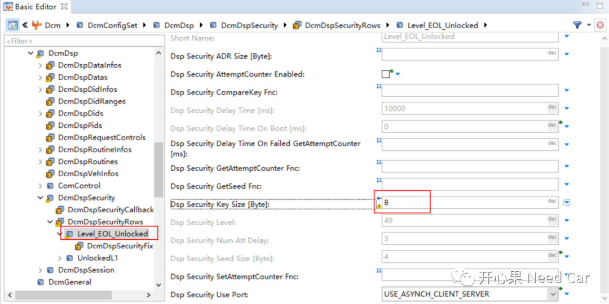
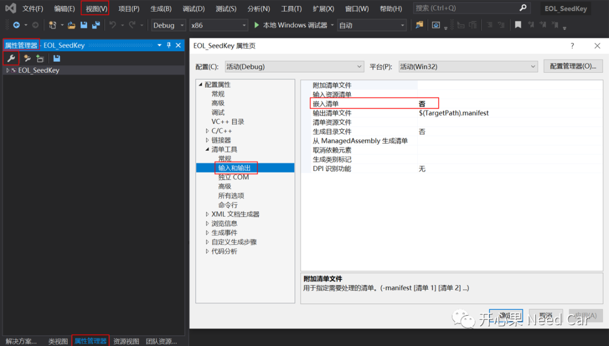

开心果 Need Car · 2022-03-28T08:06:00+08:00 · 微信原文
汽车嵌入式开发中，想必大家对*.dll文件并不陌生，诊断的$27服务，标定时的解锁都会用到*.dll文件。很多时候，*.dll文件的提供需要依赖底软开发人员，标定工程师/诊断测试工程/EOL产线人员需要*.dll文件时，总的找人制作*.dll。本文讲讲怎么基于Visual Studio做一个可用的*.dll文件。
先看一下百度百科对*.dll文件的定义：
但是在实际的开发中，多数软件工程师不清楚如何制作*.dll文件，或者制作的*.dll文件给到他人时，不能用。
本文使用开源社区版的visual studio制作*.dll文件，下载地址如下所示：
https://visualstudio.microsoft.com/zh-hans/free-developer-offers/
大家根据自己系统的情况选择合适的版本，如下所示：
下载以后，双击如下的可执行文件(*.exe)进行安装，如下所示：

不管是visual studio还是PyCharm，个人比较喜欢社区版，一：免费，二：体积小，三：公司对社区版的软件管控相对宽松。社区版对我们嵌入式开发使用的那点功能，足够应付。
1、诊断源文件
SeedKey.h文件内容如下所示：
#pragma once#ifndef SEED_KEY_H#define SEED_KEY_H#define EOL_SEEDKEY_API __declspec(dllexport)#define EOL_CODEDEFAULTLENGTH (0x04u)#define EOL_RESPONSEKEYLENGTH (0x08u)enum VKeyGenResultEx{KGRE_OK = 0,KGRE_BufferTooSmall = 1,KGRE_SecurityLevelInvalid = 2,KGRE_VariantInvalid = 3,KGRE_UnspecifiedError = 4};extern "C" EOL_SEEDKEY_API VKeyGenResultEx GenerateKeyEx(const unsigned char* iSeedArray, unsigned int iSeedArraySize,const unsigned int iSecurityLevel, const char* iVariant,unsigned char* ioKeyArray, unsigned int iKeyArraySize,unsigned int* oActualKeyArraySize);#endif
#include <windows.h>#include "SeedKey.h"static const unsigned char EOLCodeDefault[EOL_CODEDEFAULTLENGTH] = { 0x11, 0x22, 0x33, 0x44 };EOL_SEEDKEY_API VKeyGenResultEx GenerateKeyEx(const unsigned char* iSeedArray,unsigned int iSeedArraySize,const unsigned int iSecurityLevel,const char* iVariant,unsigned char* ioKeyArray,unsigned int iKeyArraySize,unsigned int* oActualKeyArraySize){if (iSeedArraySize > iKeyArraySize){return KGRE_BufferTooSmall;}for (unsigned int i = 0; i < iSeedArraySize; i++){ioKeyArray[i] = (~iSeedArray[i]);}for (unsigned int index = 4; index < iSeedArraySize + 4; index++){ioKeyArray[index] = EOLCodeDefault[index - 4];}*oActualKeyArraySize = (unsigned int)EOL_RESPONSEKEYLENGTH;return KGRE_OK;}
2、Xcp标定源文件
开始接触标定那会儿，写标定的*.dll文件确实费了一点心思，接口是规范中给定的，不解其意，连蒙带猜试错了很多次，这里直接分享给大家。
Xcp_Seedkey.h文件内容如下所示:
typedef unsigned char BYTE;typedef unsigned long DWORD;typedef enum{XcpSkExtFncAck = 0, /* o.k. */XcpSkExtFncErrPrivilegeNotAvailable,/* the requested privilege can not be unlocked with this function */XcpSkExtFncErrInvalidSeedLength, /* the seed length is wrong, key could not be computed */XcpSkExtFncErrUnsufficientKeyLength /* the space for the key is too small */}SeedNKey_Type;extern "C" CREATEDLL_API DWORD XCP_GetAvailablePrivileges(BYTE* AvailablePrivilege);extern "C" CREATEDLL_API DWORD XCP_ComputeKeyFromSeed(BYTE RequestedPrivilege ,BYTE ByteLengthSeed ,BYTE* PointerToSeed,BYTE* ByteLengthKey,BYTE* PointerToKey);
#include "Xcp_Seedkey.h"/******************************************************************************//** @brief <get available privileges>* < This function to get information about the available privileges of this function file > .* @param[in] <(BYTE *) AvailablePrivilege>* @return <(DWORD) ErrorCode :returns the privileges with available unlock algorithms in this external function file>*//******************************************************************************/CREATEDLL_API DWORD XCP_GetAvailablePrivileges(BYTE * AvailablePrivilege ){/** available privileges as XCP Resource Availability Mask.The Current Resource Protection Status parameter* is a bit mask described below in GET_STATUS Command(0xFD).0x01---CalNPag 0x04---DAQ 0x10---PGM*/*AvailablePrivilege = (CalNPag | DAQ | PGM);return XcpSkExtFncAck;}/******************************************************************************//** @brief <calculate Key from Seed for the requested privilege>* < This function to calculate a key from a seed for the requested privilege. > .* @param[in] <(BTEY) RequestedPrivilege:from Tool>* <(BTEY) ByteLengthSeed:from answer of GetSeed>* <(BTEY*) PointerToSeed>* <(BTEY*) ByteLengthKey:input: max bytes memory for key output: byte length of key>* <(BTEY*) PointerToKey>* @return <(DWORD) ErrorCode>*//******************************************************************************/CREATEDLL_API DWORD XCP_ComputeKeyFromSeed(BYTE RequestedPrivilege ,BYTE ByteLengthSeed ,BYTE* PointerToSeed,BYTE* ByteLengthKey,BYTE* PointerToKey){ByteLengthKey[KeyBufferLength];BYTE i=0;/*Initialize array ByteLengthKey*/for(i;i < KeyBufferLength; i++){ByteLengthKey[i] = 0;}if((RequestedPrivilege != CalNPag)&&(RequestedPrivilege != DAQ)&&(RequestedPrivilege != PGM)){return XcpSkExtFncErrPrivilegeNotAvailable;}if(ByteLengthSeed > KeyBufferLength){return XcpSkExtFncErrUnsufficientKeyLength;}switch(RequestedPrivilege){case CalNPag:/*User algorithm*/for (i = 0; i < ByteLengthSeed; i++){PointerToKey[i] = i+1;}*ByteLengthKey = ByteLengthSeed;break;case DAQ:/*User algorithm*/for (i = 0; i < ByteLengthSeed; i++){PointerToKey[i] = i+1;}*ByteLengthKey = ByteLengthSeed;break;case PGM:/*User algorithm*/for (i = 0; i < ByteLengthSeed; i++){PointerToKey[i] = i+1;}*ByteLengthKey = ByteLengthSeed;break;default:;}if((*ByteLengthKey != ByteLengthSeed)||(*ByteLengthKey == 0)){return XcpSkExtFncErrInvalidSeedLength;}return XcpSkExtFncAck;}
上位机通过接口XCP_GetAvailablePrivileges告知ECU，上位机需要解锁哪些资源，上述代码需要解锁CalNPag | DAQ | PGM三种资源保护（通过0xFD命令可知这三种资源均处于保护状态）。
上位机发送0xF8命令，ECU正响应以后，回复的报文中告知种子的长度。上位机通过接口函数XCP_ComputeKeyFromSeed中的参数ByteLengthSeed，即可获得ECU给的种子长度。
1、*.cdd文件中Key长度与配置工具中保持一致
*.cdd文件中的Key长度配置如下所示：


2、*.dll文件无法生成问题

参考资料
https://baike.baidu.com/item/.dll/2133451
往期精彩回顾